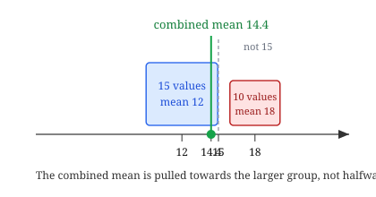
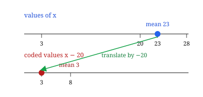

<script>if(location.hostname.endsWith('onrender.com'))location.replace('https://math-sandbox.pages.dev'+location.pathname+location.search+location.hash)</script>
<section class="theory" data-section="S1-2.2">
<h2>2.2 The mean</h2>
<p class="src">Based on Cambridge International AS &amp; A Level Mathematics: Probability &amp; Statistics 1 Coursebook (Dean Chalmers), Chapter 2 Measures of central tendency, printed pp.30–41 (Key points 2.2–2.4, Worked examples 2.3–2.12, Exercises 2B–2D). Own wording and new numbers. The median is left to the next subsection, as in the book.</p>
<p class="key-words"><strong>Key words:</strong> <em>arithmetic mean</em>, <em>class mid-value</em>, <em>coded data</em></p>
<p>The most familiar average is the <strong>arithmetic mean</strong>. For a list of values it is the sum of the values divided by how many there are. We write \(\bar{x}\) for the mean and use \(\Sigma\) for “the sum of”, so for ungrouped data</p>
<p>\[\bar{x}=\dfrac{\Sigma x}{n}.\]</p>
<p>The same relation gives the sum from the mean: \(\Sigma x=n\bar{x}\). For example, eight values with mean \(68.5\) have sum \(68.5\times 8=548\).</p>
<p>When the values have been collected into a frequency table, each value \(x\) is multiplied by its frequency \(f\) before the products are added. Then</p>
<p>\[\bar{x}=\dfrac{\Sigma xf}{\Sigma f}.\]</p>
<p>\(\Sigma xf\) is the same as \(\Sigma fx\). The total number of values is \(\Sigma f\).</p>
<div class="worked-example">
<h4>Worked example 1: The sum from the mean</h4>
<p class="src">Book: Worked example 2.3, p.30; new numbers</p>
<p>Eight workers have a mean mass of \(68.5\,\mathrm{kg}\). They wish to travel in a lift with some equipment. The lift has a maximum allowance of \(600\,\mathrm{kg}\). Find the greatest mass of equipment they can take.</p>
<ol class="steps">
<li>The eight workers have total mass \(\Sigma x=\bar{x}\times n=68.5\times 8=548\,\mathrm{kg}\). <span class="mark">M1</span></li>
<li>If \(y\) is the greatest mass of equipment, then \(548+y=600\), so \(y=52\). The greatest mass of equipment is \(52\,\mathrm{kg}\). <span class="mark">A1</span></li>
</ol>
<p class="final"><strong>Answer:</strong> \(52\,\mathrm{kg}\)</p>
</div>
<div class="worked-example">
<h4>Worked example 2: The mean from a frequency table</h4>
<p class="src">Book: Worked example 2.4, p.31; new values</p>
<p>Find the mean of the \(20\) values of \(x\) in the following table.</p>
<table class="plain">
<thead>
<tr><th>Value of \(x\)</th><th>Frequency</th></tr>
</thead>
<tbody>
<tr><td>\(4\)</td><td>\(3\)</td></tr>
<tr><td>\(5\)</td><td>\(5\)</td></tr>
<tr><td>\(6\)</td><td>\(8\)</td></tr>
<tr><td>\(7\)</td><td>\(4\)</td></tr>
</tbody>
</table>
<ol class="steps">
<li>The products \(xf\) are \(12\), \(25\), \(48\) and \(28\), so \(\Sigma xf=113\). Also \(\Sigma f=20\). <span class="mark">M1</span></li>
<li>The mean is \(\bar{x}=113\div 20=5.65\). <span class="mark">A1</span></li>
</ol>
<p class="final"><strong>Answer:</strong> \(5.65\)</p>
</div>
<p>Two sets of data can be put together. The mean of the combined set is the total of all the values divided by the total number of values, not the ordinary average of the two separate means, unless the two sets have the same size. A common error is taking the mean of the two means.</p>
<div class="worked-example">
<h4>Worked example 3: Combining two sets</h4>
<p class="src">Book: Worked examples 2.5 and 2.6, pp.31–32; new numbers</p>
<p>One group of \(15\) recordings has mean \(12\). A second group of \(10\) recordings has mean \(18\). Find the mean of all \(25\) recordings together.</p>
<ol class="steps">
<li>The first group has sum \(15\times 12=180\) and the second has sum \(10\times 18=180\), so the combined sum is \(360\). <span class="mark">M1</span></li>
<li>The combined mean is \(360\div 25=14.4\), which is not \(\dfrac{12+18}{2}=15\). <span class="mark">A1</span></li>
</ol>
<p class="final"><strong>Answer:</strong> \(14.4\)</p>
</div>
<p></p>
<p>When data have been grouped, the original recordings are no longer visible, so the mean cannot be found exactly. We calculate an estimate of the mean by taking the <strong>class mid-value</strong> as a representative of each class, and then using the grouped-data formula with those mid-values in place of \(x\). If there are gaps between the stated classes, the class boundaries must be used to find the mid-values.</p>
<div class="worked-example">
<h4>Worked example 4: An estimate from mid-values</h4>
<p class="src">Book: Worked example 2.7, pp.32–33; new classes</p>
<p>The masses, in kilograms, of \(25\) parcels are grouped as \(0\) up to \(10\) (frequency \(8\)), \(10\) up to \(20\) (frequency \(12\)) and \(20\) up to \(40\) (frequency \(5\)). Calculate an estimate of the mean mass.</p>
<table class="plain">
<thead>
<tr><th>Class (mid-value)</th><th>Frequency</th></tr>
</thead>
<tbody>
<tr><td>\(0\) to \(10\) (mid-value \(5\))</td><td>\(8\)</td></tr>
<tr><td>\(10\) to \(20\) (mid-value \(15\))</td><td>\(12\)</td></tr>
<tr><td>\(20\) to \(40\) (mid-value \(30\))</td><td>\(5\)</td></tr>
</tbody>
</table>
<ol class="steps">
<li>The products of mid-value and frequency are \(40\), \(180\) and \(150\), so \(\Sigma xf=370\). <span class="mark">M1</span></li>
<li>An estimate of the mean is \(370\div 25=14.8\,\mathrm{kg}\). <span class="mark">A1</span></li>
</ol>
<p class="final"><strong>Answer:</strong> \(14.8\,\mathrm{kg}\)</p>
</div>
<p>Data may also be stored as <strong>coded data</strong>. If every value is reduced by a constant \(b\), the mean is reduced by the same constant, so</p>
<p>\[\bar{x}=\mathrm{mean}(x-b)+b.\]</p>
<p>For a total, \(\Sigma(x-b)=\Sigma x-nb\). The same idea extends to coding of the form \(ax-b\): find the mean of the coded values, then undo the “subtract \(b\)” and undo the “multiply by \(a\)”, in that order,</p>
<p>\[\bar{x}=\dfrac{1}{a}\bigl(\mathrm{mean}(ax-b)+b\bigr).\]</p>
<div class="worked-example">
<h4>Worked example 5: Decoding a coded total</h4>
<p class="src">Book: Key point 2.3 and Worked example 2.12, pp.37 and 40; new totals</p>
<p>Twelve values of \(x\) are summarised by \(\Sigma(x-20)=36\). Find \(\bar{x}\).</p>
<ol class="steps">
<li>The mean of the coded values is \(36\div 12=3\). <span class="mark">M1</span></li>
<li>Adding back \(20\) gives \(\bar{x}=3+20=23\). Equivalently, \(\Sigma x-12\times 20=36\), so \(\Sigma x=276\) and \(\bar{x}=276\div 12=23\). <span class="mark">A1</span></li>
</ol>
<p class="final"><strong>Answer:</strong> \(23\)</p>
</div>
<div class="worked-example">
<h4>Worked example 6: Coding by a multiplier</h4>
<p class="src">Book: Key point 2.4 and Worked example 2.12, pp.40–41; new totals</p>
<p>Ten values of \(x\) are summarised by \(\Sigma(2x-5)=70\). Find \(\bar{x}\).</p>
<ol class="steps">
<li>The mean of the coded values is \(70\div 10=7\). <span class="mark">M1</span></li>
<li>Undo the subtraction of \(5\), then undo the multiplication by \(2\): \(\bar{x}=(7+5)\div 2=6\). <span class="mark">A1</span></li>
</ol>
<p class="final"><strong>Answer:</strong> \(6\)</p>
</div>
<p></p>
<h3>Quick check</h3>
<div class="quick-check" data-q="QC1">
<p>Sixteen values have mean \(7.5\). What is the sum of the values?</p>
<p class="final"><strong>Answer:</strong> \(120\)</p>
</div>
<div class="quick-check" data-q="QC2">
<p>The values \(2\), \(5\) and \(8\) occur with frequencies \(6\), \(4\) and \(2\) respectively. What is the mean?</p>
<p class="final"><strong>Answer:</strong> \(4\)</p>
</div>
<div class="quick-check" data-q="QC3">
<p>One set of \(8\) values has mean \(5\) and another set of \(12\) values has mean \(10\). What is the mean of the combined set of \(20\) values?</p>
<p class="final"><strong>Answer:</strong> \(8\)</p>
</div>
</section>
